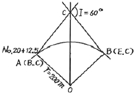
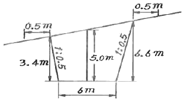
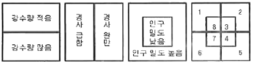

지적산업기사 (2015-05-31 기출문제)
1과목: 지적측량
1. 평판측량방법에 의한 세부측량을 도선법으로 하는 경우 도선의 변은 몇 개 이하로 제한 하는가?
- 10개
- 15개
- 20개
- 25개
(정답률: 90%)

2. 평판측량방법으로 세부측량을 하는 경우의 기준으로서 옳지 않은 것은?
- 거리측정 단위는 지적도 시행지역에서의 5센티미터, 임야도 시행지역에서는 10센티미터로 한다.
- 세부측량의 기준이 되는 기초점 또는 기지점이 부족할 때에는 측량상 필요한 위치에 보조 점을 설치할 수 있다.
- 경계점은 기지 점을 기준으로 하여 지상경계선과 도상경계선의 부합여부를 현형법, 도상원호교회법, 지상원호교회법, 거리비교확인법 등으로 확인하여 정한다.
- 측량결과도는 그 토지가 등록된 도면과 동일한 축척으로 작성한다.
(정답률: 80%)
3. 지적삼각보조점측량에서 다각망도선법에 의한 측량시 1도선의 점의 수는 최대 몇 개까지로 할 수 있는가? (단, 기지점과 교점을 포함한 점의 수)
- 3개
- 5개
- 7개
- 9개
(정답률: 80%)
4. 강제권척(steel tape)으로 일정한 거리를 측정하여 96.98m를 얻었다. 강제권척을 검정한 바 100m에 35mm가 줄어 있음을 알았다. 보정된 실거리는?
- 97.01m
- 96.95m
- 96.63m
- 96.35m
(정답률: 68%)
5. 경계점좌표등록부 시행지역에서 배각법에 의하여 도근측량을 실시하였다. 폐색변을 포함하여 17변일 때 1등도선의 폐색오차의 허용범위는?
- ±75초 이내
- ±79초 이내
- ±82초 이내
- ±95초 이내
(정답률: 75%)
6. 다음 중 지적소관청이 축척변경 시행기간 중에 축척변경 시행지역에서 축척변경 확정공고일까지 정지하여야 하는 것은? (단, 보기 ②의 경계복원측량의 경우 경계점표지의 설치를 위한 경계복원측량은 제외한다.)
- 등록전환측량
- 경계복원측량
- 토지분할측량
- 지적현황측량
(정답률: 64%)
7. 지적도 축척이 1/1200인 지역에서 평판측량방법으로 세부측량을 시행할 경우 도상에 영향을 미치지 아니하는 지상거리의 허용범위는?
- 12mm 이하
- 60mm 이하
- 100mm 이하
- 120mm 이하
(정답률: 70%)
8. 지번 및 지목을 제도하는 때에 지번과 지목의 글자간격은 글자크기의 어느 정도를 띄어서 제도하는가?
- 글자크기의 1/2
- 글자크기의 1/3
- 글자크기의 1/4
- 글자크기의 1/5
(정답률: 82%)
9. 지적기준점 표지설치의 점간거리 기준으로 옳은 것은?
- 지적삼각점:평균 2킬로미터 이상 5킬로미터 이하
- 지적삼각보조점:평균 1킬로미터 이상 2킬로미터 이하
- 지적삼각보조점:다각망도선법에 따르는 경우 평균 2킬로미터 이하
- 지적도근점:평균 40미터 이상 300미터 이하
(정답률: 85%)
10. 지적조면에 등록하는 동ㆍ리의 행정구역선 폭은?
- 0.1mm
- 0.2mm
- 0.3mm
- 0.4mm
(정답률: 56%)
11. 경사거리가 28.80m이고 하시준공으로 관측한 앨리데이트(aildade)의 경사분획이 +15분획이었다면 이때 보정한 수평거리는 얼마인가?
- 28.48m
- 28.50m
- 28.60m
- 28.71m
(정답률: 67%)
12. 두 점간의 수평거리가 148m이고 연직각이 -5°10‘00“일 때 두 점간의 경사거리는?
- 145.18m
- 148.60m
- 149.43m
- 151.20m
(정답률: 74%)
13. 방위각법에 의한 지적도근점측량시 관측방위각이 83°15‘이고 기자방위각이 83°18’이었을 때 방위각 오차는?
- +6분
- -6분
- +3분
- -3분
(정답률: 74%)
14. 다음 중 지적측량에 대한 설명으로 옳지 않은 것은?
- 경계점을 지상에 복원하는 경우 지적측량을 하여야 한다.
- 특별소삼각측량지역에 분포된 소삼각측량지역은 별도의 원점을 사용할 수 있다.
- 조본원점과 고초원점의 평면직각종횡선수치의 단위는 간(間)으로 한다.
- 지적측량의 방법 및 절차 등에 필요한 사항은 국토교통부령으로 정한다.
(정답률: 80%)
15. 평판측량방법에 의한 세부측량으로 사용할 수 없는 것은?
- 교회법
- 도선법
- 방사법
- 시거법
(정답률: 86%)
16. 경위의측량방법에 따른 세부측량을 실시하는 경우의 설명으로 옳지 않은 것은?
- 농지의 구획정리 시행지역의 측량결과도는 1천분의 1로 작성한다.
- 축척변경 시행지역의 측량결과도는 600분의 1로 작성한다.
- 거리측정단위는 1센티미터로 한다.
- 직선으로 연결하는 곡선의 중앙종거(中央縱距)의 길이는 5센티미터 이상 10센티미터 이하로 한다.
(정답률: 56%)
17. 지적도의 축척 1/600에 등록된 토지의 면적이 70.65m2으로 산출되었다. 지적공부에 등록하는 결정면적은?
- 70m2
- 70.6m2
- 70.7m2
- 71m2
(정답률: 86%)
18. 방위각법에 의한 지적도근점측량 계산에서 종횡선오차는 어떻게 배분하는가? (단, 연결오차가 허용범위 이내인 경우)
- 측선장에 역비례 배분한다.
- 종횡선차에 역비례 배분한다.
- 측선장에 비례 배분한다.
- 종횡선차에 비례 배분한다.
(정답률: 71%)
19. 교회법에 의한 지적삼각보조점측량에서 두 점간의 종선차가 40.30m, 횡선차가 61.25m일 때 두 점 간의 연결교차는?
- 63.21m2
- 69.49m2
- 71.33m2
- 73.32m2
(정답률: 65%)
20. 다음 중 트랜싯(Transit)이 갖추어야 할 3축의 조건으로 옳지 않은 것은?
- 시준축ㅗ수평축
- 수평축//시준축
- 수직축ㅗ기포관축
- 수평축ㅗ수직축
(정답률: 75%)
2과목: 응용측량
21. 다음 중 원곡선이 아닌 것은?
- 단곡선
- 복합곡선
- 반향곡선
- 클로소이드곡선
(정답률: 66%)
22. 촬영고도가 1500m인 비행기에서 표고 1000m의 지형을 촬영했을 때 이 지형의 사진축척은? (단, 초점거리는 150mm)
- 1:10000
- 1:6600
- 1:3300
- 1:2500
(정답률: 65%)
23. 원곡선 설치시 교각 60°, 반지름 200m, 곡선시점의 위치가 No.20+12.5m일 때 곡선종점의 위치는? (단, 측점간 거리는 20m)

- 421.94m
- 521.94m
- 621.94m
- 821.94m
(정답률: 64%)
24. GPS의 특징으로 틀린 것은?
- 측점간 시통에 무관하다.
- 야간에도 관측이 가능하다.
- 날씨의 영향을 거의 받지 않는다.
- 고압선, 고층건물 등은 관측의 정확도에 영향을 주지 않는다.
(정답률: 78%)
25. 등고선에 대한 설명으로 틀린 것은?
- 주곡선은 지형을 표시하는데 기본이 되는 선이다.
- 계곡선은 주곡선 10개마다 굵게 표시한다.
- 간곡선은 주곡선 간격의 1/2이다.
- 조곡선은 간곡선 간격의 1/2이다.
(정답률: 84%)
26. 1:50000 지형도에서 A점은 140m 등고선 위에, B점은 180m 등고선 위에 있다. 두 점 사이의 경사가 15%일 때 수평거리는?
- 255.56m
- 266.67m
- 277.78m
- 288.89m
(정답률: 57%)
27. 다음 중 깊이 50m, 직경 5cm인 수직 터널에 의해 터널 내외를 연결하는 측량방법으로 가장 적합한 것은?
- 삼각 구분법
- 레벨과 함척에 의한 방법
- 폴과 지거법에 의한 방법
- 데오도라이트와 추선에 의한 방법
(정답률: 73%)
28. 지형도는 지표면 상의 자연 및 지물(地物), 지모(地貌)를 표현하게 되는데, 다음 항목 중에서 지모(地貌)에 해당하지 않는 것은?
- 도로
- 계곡
- 평야
- 구릉
(정답률: 77%)
29. 초점거리 150mm, 가진크기 23cm×23cm, 축척 1:10000인 사진이 있다. 종중복도가 60%일 때 기선고도비는?
- 0.38
- 0.48
- 0.52
- 0.61
(정답률: 48%)
30. 사진판독에서 정성적 요소가 아닌 것은?
- 모양
- 크기
- 음영
- 질감
(정답률: 60%)
31. 곡선반지름이나 곡선길이가 작은 시가지의 곡선설치나 철도, 도로 등의 기설곡선의 검사 또는 개정에 편리한 노선측량 방법은?
- 접선편거와 현편거에 의한 방법
- 중앙종거에 의한 방법
- 접선에 대한 지거법
- 편각에 의한 방법
(정답률: 63%)
32. 등고선간 최소거리의 방향이 의미하는 것은?
- 최대 경사 방향
- 최소 경사 방향
- 하향 경사 방향
- 상향 경사 방향
(정답률: 76%)
33. 지하시설물 도면을 작성할 경우 시설물과 색상이 바르게 연결되지 않는 것은?
- 상수도시설-청색
- 전기시설-적색
- 통신시설-갈색
- 가스시설-황색
(정답률: 62%)
34. 수준측량에서 전시와 후시의 거리를 같게 측량함으로써 제거되는 오차가 아닌 것은?
- 시준축 오차
- 표척의 0눈금 오차
- 광선의 굴절에 의한 오차
- 지구의 곡률에 의한 오차
(정답률: 50%)
35. 삼각수준측량에서 연직각 a=20°, 두 점 사이의 수평거리 D=400m, 기계 높이 I=1.70m, 표척의 높이 Z=2.50m이면 두 점간의 고저차는? (단, 대기오차와 지구의 곡률 오차는 고려하지 않는다.)
- 130.11m
- 140.25m
- 144.79m
- 146.39m
(정답률: 42%)
36. GPS 측량에서 지적기준점 측량과 같이 높은 정밀도를 필요로 할 때 사용하는 관측방법은?
- 실시간 키네마틱(realtime kinematic) 관측
- 키네마틱(Kinematic) 관측
- 스태틱(Static) 측량
- 2점 측위관측
(정답률: 85%)
37. 사진측량의 특징에 대한 설명으로 틀린 것은?
- 좁은 지역, 대축척일수록 경제적이다.
- 동일 모델 내에서는 정확도가 균일하다.
- 작업단계가 분업화 되어 있으므로 능률적이다.
- 개인적 원인의 오차가 적게 생기며 다른 지점과의 상대적 오차가 적다.
(정답률: 84%)
38. 상호표정이 끝났을 때 사진모델과 실제 지형모델의 관계로 옳은 것은?
- 상사
- 대칭
- 합동
- 일치
(정답률: 79%)
39. 그림에서 여유 폭을 고려한 단면용지의 폭은? (단, 여유폭은 0.5m로 한다.)

- 10m
- 11m
- 12m
- 13m
(정답률: 57%)
40. A점의 표고 100.65m. B점의 표고 104.25m일 때 레벨을 사용하여 A점에 세운 표척의 읽음값이 5.23m이었다면 B점에 세운 표척의 읽음값은?
- 0.78m
- 0.98m
- 1.52m
- 1.63m
(정답률: 55%)
3과목: 토지정보체계론
41. 모든 데이터들을 테이블과 같은 형태로 나타내는 것으로 데이터 구조를 릴레이션으로 표현하는 모델은?
- 계층형 데이터베이스
- 네트워크형 데이터베이스
- 관계형 데이터베이스
- 객체지향형 데이터베이스
(정답률: 69%)
42. 다음 중 래스터데이터가 갖는 장점으로 옳지 않은 것은?
- 데이터 구조가 단순하다.
- 중첩분석이 용이하다.
- 원격탐사 영상 자료와의 연계가 용이하다.
- 위상관계를 나타낼 수 있다.
(정답률: 76%)
43. 다음 중 지적전산화의 목적으로 옳지 않은 것은?
- 토지소유자의 현황 파악
- 토지관련 정책자료의 다목적 활용
- 지적 관련 민원의 신속한 처리
- 전산화를 통한 중앙 통제권 강화
(정답률: 80%)
44. 한 픽셀에 대해 8bit를 사용하면 몇 가지 서로 다른 값을 표현할 수 있는가?
- 8가지
- 64가지
- 128가지
- 256가지
(정답률: 79%)
45. 도로, 전력, 상하수도 등과 같이 연결성을 기반으로 하는 분야에서 최적 경로, 효율적인 자원의 이동과 배치 등을 산출하는 분석기법은?
- 표면분석
- 네트워크분석
- 중첩분석
- 인접성분석
(정답률: 60%)
46. 토지정보체계의 데이터 모델 생성과 관련된 개체(entity)와 객체(object)에 대한 설명이 틀린 것은?
- 개체는 서로 다른 개체들과의 관계성을 가지고 구성된다.
- 개체는 데이터 모델을 이용하여 정량적인 정보를 갖게 된다.
- 객체는 컴퓨터에 입력된 이후 개체로 불린다.
- 객체는 도형과 속성정보 이외에도 위상정보를 갖게 된다.
(정답률: 73%)
47. 데이터베이스 구축에서 현지조사 및 현장보완 측량 결과를 이용하여 이미 입력된 공간 데이터를 수정하는 것은?
- 정위치편집
- 구조화편집
- 속성데이터의 입력 및 수정
- 검수
(정답률: 52%)
48. 토지정보를 공간자료를 속성자료로 분류할 때 다음 중 공간자료에 해당하는 것으로만 나열된 것은?
- 지적도, 임야도
- 지적도, 토지대장
- 토지대장, 임야대장
- 토지대장, 공유지연명부
(정답률: 80%)
49. 토지정보체계에 있어 기반이 되는 것으로 가장 알맞은 것은?
- 필지
- 지번
- 지목
- 소유자
(정답률: 68%)
50. 지적도 재작성 사업을 시행하여 지적도 독취자료를 이용하는 도면전산화의 추진 년도는?
- 1975년
- 1978년
- 1984년
- 1990년
(정답률: 64%)
51. 공간데이터의 질을 평가하는 기준과 거리가 먼 것은?
- 데이터의 경제성
- 위치 정확성
- 속성 정확성
- 논리적 일관성
(정답률: 75%)
52. 다음 중 데이터베이스의 장점으로 옳지 않은 것은?
- 데이터의 처리 속도가 증가한다.
- 방대한 종이 자료를 간소화시킨다.
- 정확한 최신 정보를 이용할 수 있다.
- 초기의 시스템 구축비용이 저렴하다.
(정답률: 88%)
53. 메타데이터의 기본적인 요소가 아닌 것은?
- 공간참조
- 공간자료의 구성
- 자료의 내용
- 정보 획득 방법
(정답률: 59%)
54. 베이스맵을 만들고 각 레이어 별로 분류도를 만들었다. 이들을 중첩했을 때 산사태로 가장 큰 피해가 예상되는 지역은?

- 지역7
- 지역6
- 지역5
- 지역4
(정답률: 84%)
55. 지도 형상이 일정한 격자구조로 정의되는 측성정보로 옳은 것은?
- 상대적 위치정보
- 위상정보
- 영상정보
- 속성정보
(정답률: 42%)
56. 국가공간정보에 관한 법령에 의한 국가공간정보위원회의 분과위원회가 아닌 것은?
- 기본공간정보 분과위원회
- 공간객체등록번호 분과위원회
- 공간정보융합서비스 분과위원회
- 공간정보통신 분과위원회
(정답률: 44%)
57. 다음 중 SQL의 특징에 대한 설명이 아닌 것은?
- 상호 대화식 언어다.
- 집합단위로 연산하는 언어다.
- 관계형 DBMS에서 자료를 만들고 조회할 수 있는 도구이다.
- ISO 8211에 근거한 정보처리체계와 코딩 규칙을 갖는다.
(정답률: 65%)
58. 다음 중 광범위한 자료를 호환을 위한 규약으로서, 국가지리정보체계(NGIS)의 공간데이터 교환포맥으로 하였던 것은?
- SDTS
- DIGESI
- SMS
- SHP
(정답률: 72%)
59. 다음의 데이터 언어 중 데이터 정의어(DLL)에 해당하는 것은?
- 생성:CREATE
- 검색:SELECT
- 삽입:INSERT
- 갱신:UPDATE
(정답률: 67%)
60. 공간데이터를 취득하는 디지타이저의 유형이 아닌 것은?
- 전자식 디지타이저
- 카메라 유도식 디지타이저
- 스캐너방식 디지타이저
- 기어엔코더 방식 디지타이저
(정답률: 53%)
4과목: 지적학
61. 우리나라의 지적에 수치지적이 시행되기 시작한 연대는?
- 1950년
- 1976년
- 1980년
- 1986년
(정답률: 65%)
62. 다음 중 지적의 발생설과 관계가 먼 것은?
- 법률설
- 과세설
- 치수설
- 지배설
(정답률: 73%)
63. 다음 지목 중 잡종지에서 분리된 지목에 해당 하는 것은?
- 지소
- 유지
- 염전
- 공원
(정답률: 68%)
64. 다음 중 적극적 토지등록제도의 기본원칙이라고 할 수 없는 것은?
- 토지등록은 국가공권력에 의해 성립된다.
- 토지에 대한 권리는 등록에 의해서만 인정된다.
- 등록내용의 유효성은 법률적으로 보장된다.
- 토지등록은 형식심사에 의해 이루어진다.
(정답률: 72%)
65. 지적의 원리 중, 지적활동의 정확도를 설명한 것으로 옳지 않은 것은?
- 토지현황조사의 정확성-일필지 조사
- 기록과 도면의 정확성-측량의 정확도
- 서비스의 정확성-기술의 정확도
- 관리ㆍ운영의 정확성-지적조직의 업무분화 정확도
(정답률: 82%)
66. 공훈의 자등에 따라 공신들에게 일정한 면적의 토지를 나누어 준 것으로, 고려시대 토지제도 정비의 효시가 된 것은?
- 관료전
- 공신전
- 역분전
- 정전
(정답률: 67%)
67. 경계의 결정 원칙 중 경계불가분의 원칙과 관련이 없는 것은?
- 토지의 경계는 인접 토지에 공통으로 작용한다.
- 토지의 경계는 유일무이하다.
- 경계선은 위치와 길이만 있고 너비가 없다.
- 축척이 큰 도면의 경계를 따른다.
(정답률: 55%)
68. 다음 중 토렌스시스템에 대한 설명으로 옳은 것은?
- 미국의 토렌스 지방에서 처음 시행되었다.
- 실질적 심사에 의한 권원조사를 하지만 공신력은 없다.
- 기본이론으로 거울이론, 커튼이론, 보험이론이 있다.
- 피해자가 발생하여도 국가가 보상할 책임이 없다.
(정답률: 86%)
69. 토지소유권에 관한 설명으로 옳은 것은?
- 법률의 범위 내에서 사용, 수익, 처분할 수 있다.
- 토지소유권은 토지를 일시 지배하는 제한물권이다.
- 존속기간이 있고 소멸시효에 걸린다.
- 무제한 사용, 수익할 수 있다.
(정답률: 86%)
70. 궁장토 관리조직의 변천과정으로 옳은 것은?
- 제실제도국→제실재정회의→임시재산정리국→제실재산정리국
- 제실재정회의→제실제도국→제실재산정리국→임시재산정리국
- 제실제도국→임시재산정리국→제실재산정리국→제실재정회의
- 임시재산정리국→제실재정회의→제실제도국→제실재산정리국
(정답률: 41%)
71. 다음 중 지적형식주의에 관한 설명으로 옳은 것은?
- 토지소유권은 부동산등기부에 등기된 바에 따른다.
- 토지대장은 카드형식으로만 작성된다.
- 지적공부의 열람은 누구나 할 수 있다.
- 모든 토지는 지적공부에 등록해야 한다.
(정답률: 72%)
72. 다음 중 지적의 일반적 기능 및 역할로 옳지 않은 것은?
- 토지의 물리적 현황을 등록한 토지대장은 등기부를 정리하기 위한 보조적 기능을 한다.
- 지적공부에 등록된 정보는 토지평가의 기초 자료로 활용 된다.
- 지적공부에 등록된 정보는 토지거래의 기초 자료로 활용 된다.
- 토지정보를 필요로 하는 분야에 종합 정보원으로서의 기능을 한다.
(정답률: 63%)
73. 토지를 등록하는 지적공부를 크게 토지대장 등록지와 임야대장 등록지로 구분하고 있는 직접적인 원인은?
- 조사사업별 구분
- 토지지목별 구분
- 과세세목별 구분
- 도면축척별 구분
(정답률: 71%)
74. 다음 중 근대 지적제도가 창설되기 이전에 문란한 토지제도를 바로잡기 위하여 대한제국에서 과도기적으로 시행한 제도는?
- 양안제도
- 입안제도
- 지계제도
- 사정제도
(정답률: 80%)
75. 지적공개주의의 의미로 가장 적합한 것은?
- 지적공부에 등록하여 국가 통제하에 두는 것이다.
- 토지소유자, 이해관계자에게 정당하게 활용되도록 하는 것이다.
- 지적관계 공무원에게 공개하는 것이다.
- 지적공부를 외국인에게 공개하여 과세자료를 제공하는 것이다.
(정답률: 83%)
76. 지목의 설정원칙이 아닌 것은?
- 지목변경불변의 법칙
- 사용목적추종의 원칙
- 용도경중의 원칙
- 등록선후의 원칙
(정답률: 60%)
77. 다음 중 조선시대 토지제도인 양전법에서 규정한 전형(田形:토지의 모양) 5가지에 해당되지 않는 것은?
- 방전(方田)
- 원전(圓田)
- 직전(直田)
- 규전(圭田)
(정답률: 69%)
78. 고려시대 토지를 기록하는데 대장에 해당되지 않는 것은?
- 도정장
- 양전도장
- 도전정
- 구양안
(정답률: 61%)
79. 다음 중 지적도와 임야도의 등록사항이 아닌 것은?
- 면적
- 지번
- 경계
- 지목
(정답률: 50%)
80. 조선시대에 정약용이 주장한 양전개정론의 내용에 해당되지 않는 것은?
- 방량법과 어린도법
- 정전제
- 경무법
- 망척제
(정답률: 72%)
5과목: 지적관계
81. 지적도에 기재하는 지목부호는 “유”와 “장”은 어떤 지목인가?
- 유원지와 목장용지
- 유원지와 공장용지
- 유지와 공장용지
- 유지와 목장용지
(정답률: 81%)
82. 1필지로 정할 수 있는 기준에 적합하지 않는 것은?
- 소유자와 용도가 동일하게 지반이 연속된 토지
- 종된 용도의 토지의 면적이 주된 용도의 토지면적의 10퍼센트 미만인 토지
- 주된 용도의 토지의 편의를 위하여 설치된 도로ㆍ구거 등의 부지
- 종된 용도의 토지의 지목이 “대”인 토지
(정답률: 68%)
83. 다음 중 일람도를 작성하는 축척 기준으로 옳은 것은? (단, 도면의 장수가 많아서 1장에 작성할 수 없는 경우는 고려하지 않는다.)
- 도면축척의 2분의 1
- 도면축척의 5분의 1
- 도면축척의 10분의 1
- 도면축척의 20분의 1
(정답률: 70%)
84. 다음 중 합병의 금지사유가 아닌 것은?
- 합병하려는 토지의 지목이 서로 다른 경우
- 합병하려는 토지의 지적도 및 임야도의 축척이 다른 경우
- 합병하려는 각 필지의 지반이 연속되지 아니한 경우
- 합병하려는 각 필지의 토지가 등기된 토지인 경우
(정답률: 77%)
85. 다음 대한지적공사의 사업에 해당하지 않는 것은?
- 지적측량
- 지적재조사사업
- 지적측량 교육 지원사업
- 지적측량성과의 검사
(정답률: 63%)
86. 지적공부의 등록사항 중 모든 지적공부에 공부에 공통으로 등록되는 사항으로 맞는 것은?
- 지목
- 지분
- 토지소유자
- 지번
(정답률: 75%)
87. 다음 중 지번을 순차적으로 부여하여야 하는 방향 기준으로 옳은 것은?
- 북동→남서
- 북서→남동
- 남동→북서
- 남서→북동
(정답률: 83%)
88. 다음 중 지적공부 등록을 말소할 수 있는 사항은?
- 하천으로 된 토지
- 바다로 된 토지
- 등록전환
- 행정구역의 통ㆍ폐합
(정답률: 85%)
89. 축척변경 시행공고 시 기재해야할 사항이 아닌 것은?
- 축척변경의 변경절차 및 면적결정방법
- 축척변경의 시행에 따른 청산방법
- 축척변경의 시행에 관한 세부계획
- 축척변경의 목적, 시행지역 및 시행기간
(정답률: 39%)
90. 다음 중 지적측량업의 등록기준으로 옳지 않은 것은?
- 토탈스테이션 1대 이상
- 출력장치 1대 이상
- 초급기술자 2명 이상
- 고급기술자 2명 이상
(정답률: 59%)
91. 다음 중 지목이 “체육용지”가 아닌 것은?
- 경마장
- 경륜장
- 승마장
- 스키장
(정답률: 80%)
92. 측량ㆍ수로조사 및 지적에 관한 법률에 따른 용어의 정의가 틀린 것은?
- ‘토지의 이동’이란 토지의 표시를 새로 정하거나 변경 또는 말소하는 것을 말한다.
- ‘지목’이란 토지의 주도니 용도에 따라 토지의 종류를 구분하여 지적공부에 등록한 것을 말한다.
- ‘등록전환’이란 임야대장 및 등록된 토지를 토지대장 및 지적도에 옮겨 등록하는 것을 말한다.
- ‘지번설정지역’이란 지번을 설정하는 단위지역으로서 동ㆍ리 또는 이에 준하는 행정동 단위의 지역을 말한다.
(정답률: 56%)
93. 지적전산자료의 이용ㆍ활용에 대한 승인권자가 아닌 자는?
- 국토교통부장관
- 국가정보원장
- 시ㆍ도지사
- 지적소관청
(정답률: 83%)
94. 축척변경에 대한 확정공고의 시기로 옳은 것은?
- 공사완료시
- 청산금의 납부 및 지급의 완료시
- 축척변경의 등기촉탁 완료시
- 청산금 징수 공고시
(정답률: 57%)
95. 지적공부의 복구자료가 될 수 없는 것은?
- 측량결과도
- 대한지적공사 발행 지적도 사본
- 지적공부 등본
- 토지이동정리 결의서
(정답률: 65%)
96. 지목 부호는 다음의 지적공부 중 어디에 표기하는가?
- 토지대장
- 임야대장
- 지적도
- 경계점 좌표등록부
(정답률: 74%)
97. 지적공부를 복구하려는 경우에는 복구하려는 토지의 표시 등을 시ㆍ군ㆍ구 게시판 및 인터넷 홈페이지에 몇 일 이상 게시하여야 하는가?
- 15일 이상
- 20일 이상
- 25일 이상
- 30일 이상
(정답률: 84%)
98. 지적 관련 법령에 따른 지목설정의 원칙이 아닌 것은?
- 임시적 변경 불변의 원칙
- 1필1지목의 원칙
- 주지목추종의 원칙
- 자연지목의 원칙
(정답률: 72%)
99. 다음 중 공유지연명부의 등록사항으로 틀린 것은?
- 토지의 소재
- 지번
- 소유권 지분
- 대지권 비율
(정답률: 61%)
100. 다음 중 지적공부를 청사 밖으로 반출할 수 없는 경우는?
- 지적측량검사를 위하여 필요한 경우
- 천재지변을 피하기 위하여 필요한 경우
- 관할 시ㆍ도지사의 승인을 받은 경우
- 화재로 지적공부의 소실 우려가 있는 경우
(정답률: 72%)